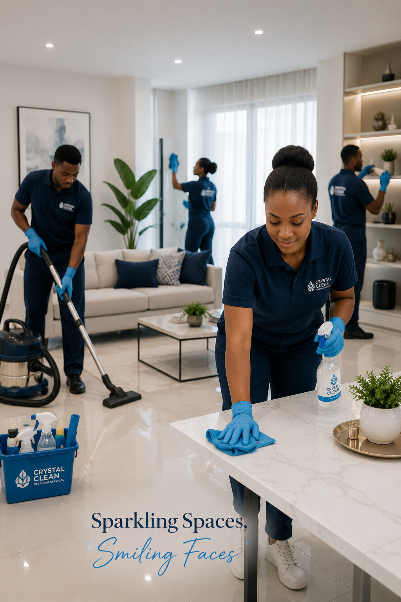
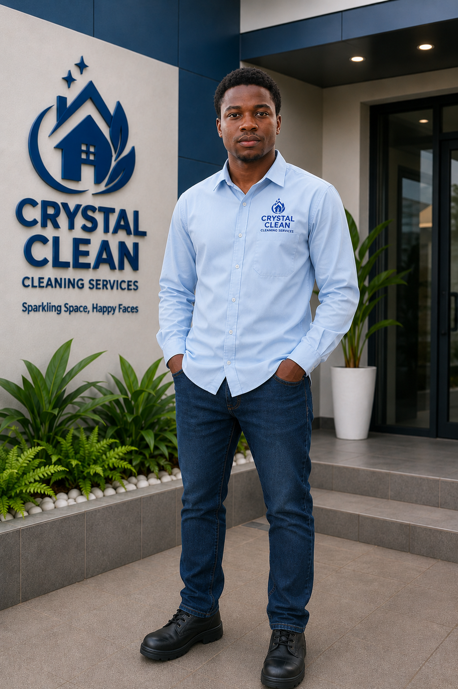

Residential & Commercial Cleaning
Detailed cleaning for homes, offices, shops, and business spaces.
Learn more →Crystal Clean delivers trusted residential, commercial, post-construction, window, and move-in/move-out cleaning services in Ijebu-Ode, Ogun State, and across Nigeria with care you can see.

Whether you need a deep clean for your home, regular office cleaning, or a post-construction cleanup before handover, Crystal Clean brings professionalism, attention to detail, and dependable service as a trusted cleaning company in Ijebu-Ode.
Flexible cleaning solutions designed for homes, offices, newly built properties, and other spaces throughout Ijebu-Ode and beyond.
Detailed cleaning for homes, offices, shops, and business spaces.
Learn more →We remove construction dust, debris, cobwebs, and build-up so your new space is ready.
Learn more →Professional cleaning for windows and glass surfaces to restore clarity and shine.
Learn more →Fresh, thorough cleaning for properties before moving in or after moving out.
Learn more →
Crystal Clean was created with a simple purpose: to deliver high-quality cleaning services while building a professional workforce and creating opportunities for people who are ready to work.
We are proudly serving Ijebu-Ode, Ogun State, and growing into a trusted cleaning company operating across Nigeria with a strong focus on quality, professionalism, and customer satisfaction.
Work With Us →We focus on the areas others may overlook, from corners and surfaces to bathrooms and glass.
We are building a disciplined team trained to work respectfully, safely, and efficiently.
Our goal is not simply to finish a job, but to leave you genuinely satisfied with the result.
We are building a service brand designed to expand and serve clients across Nigeria.
Replace the placeholders below with your real project photos as your portfolio grows.
“Crystal Clean gave our space the attention it needed. The team was professional and the final result was impressive.”
Client NameResidential Client“From communication to the actual work, everything felt organized. I would confidently recommend their service.”
Client NameCommercial Client“The difference after the cleaning was clear. They took their time and left the property looking fresh.”
Client NameProperty ClientHave another question? Contact our team and we will be happy to help.
We provide residential, commercial, post-construction, window, and move-in/move-out cleaning services. Contact us with your location and requirements.
Pricing depends on the size and condition of the property, scope of work, number of areas, access, window requirements, and other project-specific factors.
Yes. Our service is structured around professional cleaning equipment and suitable cleaning products for the agreed scope of work.
Yes. Post-construction cleaning is one of our core services, including dust removal, floors, bathrooms, walls, cobwebs, and other agreed areas.
Tell us what you need cleaned and our team will get back to you for residential, commercial, and post-construction cleaning in Ijebu-Ode and across Nigeria.